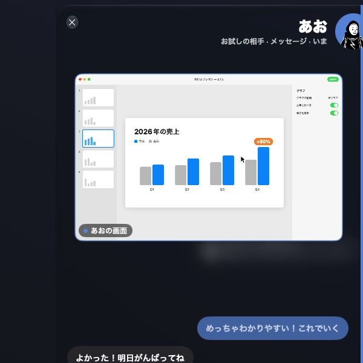

01
Rest and choose
Rest on the right edge,
scroll to choose a friend.
Knock for Mac
Not quite a call. Just a quick word.
Knock three times on the edge of your screen.
Free ／ No ads ／ macOS 26 or later
01 / THE IDEA
Your friends, always at the edge of the screen.
Knock, and a small room opens right there.
Words, files and screens, all in that room.
The “got a sec?”
from the next desk.
02 / THREE KNOCKS
Rest your cursor on the right edge for a dial of friends.
Bump the edge three times and they get your knock.
Rest on the right edge,
scroll to choose a friend.
Bump the edge three times.
When they answer, a room opens.
A word, a file, a screen.
All in the room.

IN THE ROOM03 / IN THE ROOM
In the room, their cursor moves with their name on it.
Pointing is enough.
Quick replies without typing, and messages.
Drop a whole folder into the room.
Show the window you choose, pin a spot on it.
One room for several friends, their screens side by side.
04 / GOOD TO KNOW
Yes. You both install Knock, sign in, and connect with an invite code. No friends on Knock yet? Try everything with the demo partners, Ao and Haru.
It’s free, with no ads.
Straight between the two Macs, encrypted. Only when a direct connection can’t be made does the server relay them, live, without storing them.
Only when you show your screen: macOS Screen Recording. Only the window you choose is shown.
Turn on Focus and knocks wait quietly until you come back to the edge.
ONE KNOCK AWAY.
For Mac. Free. No ads.